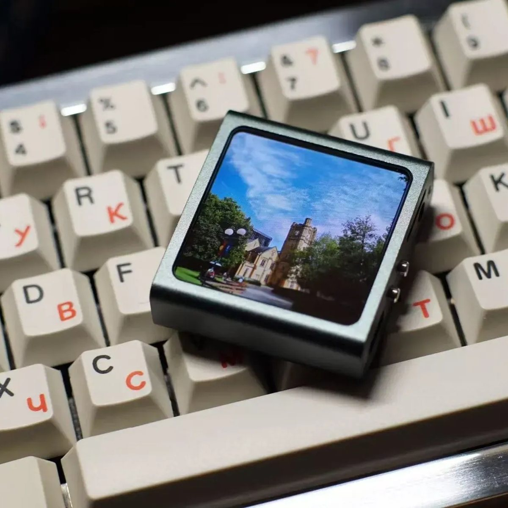

FAKE_POD_NANO 无损音乐播放器
一台模仿 iPod Nano 外观的小播放器。我用原作者开源出来的资料自己打板、自己焊接、 按他的 BOM 在淘宝配元件、自己刷固件做出了这台机器——我做的是 HIFI 版，用的是 CS43131 这颗 DAC。

硬件配置
| 主控 | ESP32-S3，负责驱动 QSPI 屏幕、解码音频、跑界面 |
|---|---|
| 屏幕 | 鱼鹰光电 2.0 英寸 460×460 QSPI AMOLED——比普通 LCD 更省电、显示效果更好 |
| DAC（我这台） | CS43131：信噪比 130 dB，自带耳机输出，大多数耳机可以直接推 |
| DAC（另一版） | PCM5102A：信噪比 112 dB，不需要 MCK 时钟，默认是 LINE OUT，接音响更合适 |
| 传感器 | QMI8658 六轴陀螺仪，用来做手势切歌 |
| 存储 | 内置 TF 卡槽，音乐放在卡里 |
| 电源 | TP4055 充电管理 + 603035 锂电池 |
| 电池（我这台） | 1000 mAh，能连着听大约 6 小时。原项目页上 603035 标的是约 600 mAh，我装的这块容量是 1000 mAh |
以上参数摘自原项目页面（2026-09-21 抓取），不是我猜的；更完整的资料（图纸、固件、BOM）请去下面的原项目页面看。
它能做什么
- 无损音乐播放：支持 MP3 与 FLAC，最高 96 kHz 采样率、24 bit 位宽；界面仿 iPod Nano，能读取并显示歌曲内嵌的封面。
- 拾音频谱：共 5 种样式，带实时节拍检测，屏幕会跟着音乐动。
- MJPEG 动画播放：460×460、15 帧/秒，可以把自己做的动画放进去（附件里有转换工具）。
- 图片相册：显示 460×460 的 JPEG 图片。
- 文本阅读器：能看 UTF-8 编码的 txt。
- 蓝牙传歌与升级：通过小程序做蓝牙 OTA 升级、发送图片。
- 当电脑的 USB 声卡（原项目 2025-07-24 更新加入）：把播放器插到电脑上就能当外置声卡用，屏幕还会显示背景图和频谱——注意这个模式需要单独刷固件。
已知的限制
- 歌曲封面不能太大：原作者的说明是别超过 400 KB、尺寸建议不超过 500×500，否则播放器读不动。
- TF 卡里的音乐要按文件夹放进
music目录，而且只认一层文件夹，嵌套的更深的目录扫不到。 - 一旦生成了播放列表文件，之后进音乐就会直接读列表、不再重新扫描 TF 卡——新加的歌要重新扫描才会出现。
- MJPEG 动画和相册都是 460×460，超过这个尺寸的素材要先转好。
- USB 声卡模式和播放器模式是两套固件，要来回切就得重新刷。
两个我想先说清楚的坑
这块 AMOLED 屏幕很脆弱，边上没有任何保护，装配时压到就会坏，装的时候宁可慢一点； 另外不要带电插拔——耳机、TF 卡、USB 线都一样，插拔前先关机。
我在这个项目里做了什么
- 自己下单打了 PCB（板厚 1.0 mm，这是原作者特别强调的，打错了装不进去）。
- 自己焊接：板上的阻容大多是 0402 封装，肉眼几乎看不清，得配钢网和加热台。
- 照着原作者的 BOM 在淘宝配齐元件（屏幕、DAC、陀螺仪、电池、外壳这些）。
- 外壳用原项目给的 3D 模型文件，找嘉立创打印的（模型不是我画的）。
- 自己刷固件：先用一键烧录工具写进去，之后再用小程序做蓝牙 OTA。
设计、固件、图纸都是原作者做的，这部分我会一直写清楚；我加进去的是动手的部分和上面那两个坑的经验。
时间与成本
- 7 天等板（打板 + 快递）
- 1 天焊接 + 烧录
- ≈¥120整机成本
- ¥0打板 + 外壳
- 6 小时连着听（续航）
| 屏幕 | 2.0 英寸 460×460 AMOLED：¥56，整台机器里最贵的一件 |
|---|---|
| PCB 打板 | 嘉立创打板：免费（¥0） |
| 外壳 | 拿原项目给的模型文件去嘉立创 3D 打印：¥5，正好有券，实付 ¥0 |
| 其余元件 | 主控、DAC、电池和板上的小元件：合计约 ¥64 |
| 合计 | 整机约 ¥120 |
打板等了 7 天（排队 + 快递），板子到手之后焊接加烧录一天做完，从下单到能出声大约 8 天； 钱是我自己记的账，是约数，不是原项目页面的数据（"其余元件"那一行是拿总价减掉屏幕算出来的）。 打板和外壳能白嫖，是因为赶上了嘉立创的免费打板和优惠券。
制作过程实拍
从一块空板到能塞进兜里听歌，中间是刷锡膏、贴元件、焊、刷固件这几步。 下面这些照片都是我自己拍的、自己截的，没有从原项目搬图——点任意一张可以放大看。
-
第 1 步
备料：把位号一个个对过去
板子到手之后先别急着焊。用嘉立创的辅助焊接工具，把 BOM 上的元件和板上的位号对上， 高亮哪个就贴哪个，贴错一个位置可能就要拆下来重来。
-
第 2 步
刷锡膏
钢网对准、锡膏刮平，再上焊台用 190 ℃ 回流焊。锡膏是我自己调的， 这次调得偏稀，涂上去不太好控制——太稀容易连锡，太干又推不动， 后来把锡膏重新调好、整块板重刷了一遍才往下焊。
-
第 3 步
装进外壳
焊完、洗净、测试通过，再装壳。外壳不是买的成品，是拿原项目给的模型文件 在嘉立创 3D 打印的（5 元，正好有券，实付 0 元）。这张是拆开的样子（这台上还没装电池）： 从上往下是外壳、主板、2.0 英寸方形屏幕，屏幕和主板之间只靠一条软的排线连着。
-
第 4 步
刷固件、点亮
第一次点亮能出这个「关于本设备」页面，基本上就稳了：型号 FAKE POD NANO、 版本 H02F12.9。屏幕上那行「设计：萨纳兰的黄昏」是原作者的署名，不是我—— 这台机器的设计从头到尾都是他做的。
装好之后
出处与协议
原项目：FAKE_POD_NANO 无损音频播放器 · planevina（立创开源硬件平台）
协议：CC BY-NC-SA 3.0——标注出处即可参考使用，不要拿去卖，改动后也要用同样的协议开源。
我这台用到的图纸、固件和外壳模型文件也都来自原项目，我做的只有焊接、装配、配元件和刷机。
这个页面上的配图是我自己拍的实拍照片，没有搬运原作者的图片；想要图纸和固件，请直接去原项目页面下载。